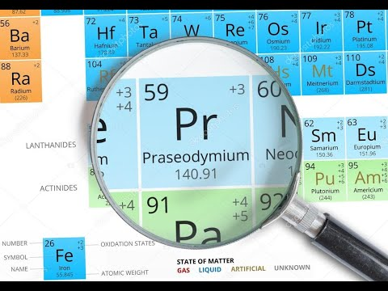

Празеодим
Празеоди́м (химический символ — Pr, от лат. Praseodymium) — химический элемент 3-й группы (по устаревшей классификации — побочной подгруппы третьей группы, IIIB) шестого периода периодической системы химических элементов Д. И. Менделеева с атомным номером 59.Относится к семейству лантаноидов.Простое вещество празеодим — это умеренно мягкий редкоземельный металл серебристо-белого цвета.

Празеодим был открыт в 1885 году австрийским химиком Карлом Ауэром фон Вельсбахом. Он установил, что обнаруженный в 1839 году шведским химиком Карлом Мосандером элемент дидим является смесью двух элементов с близкими физическими и химическими свойствами, которым он дал названия неодим и празеодим.
Празеодим получают при разделении лантаноидов, в виде металла – восстановлением трифторида. Оксид и фторид празеодима применяют для окрашивания стёкол, керамики и эмалей, в лазерных кристаллах, металлический празеодим – для легирования Mg, а также в смеси с другими лантаноидами; искусственный изотоп 142Pr – для радиотерапии.